HT历次修改与阶段38结果阶段36/37/38任务交接与探索对比 PNG · PDF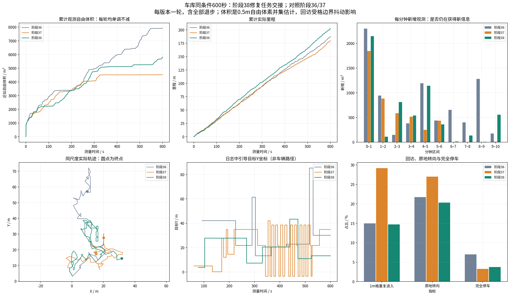
车库 · 多指标总览 PNG · PDF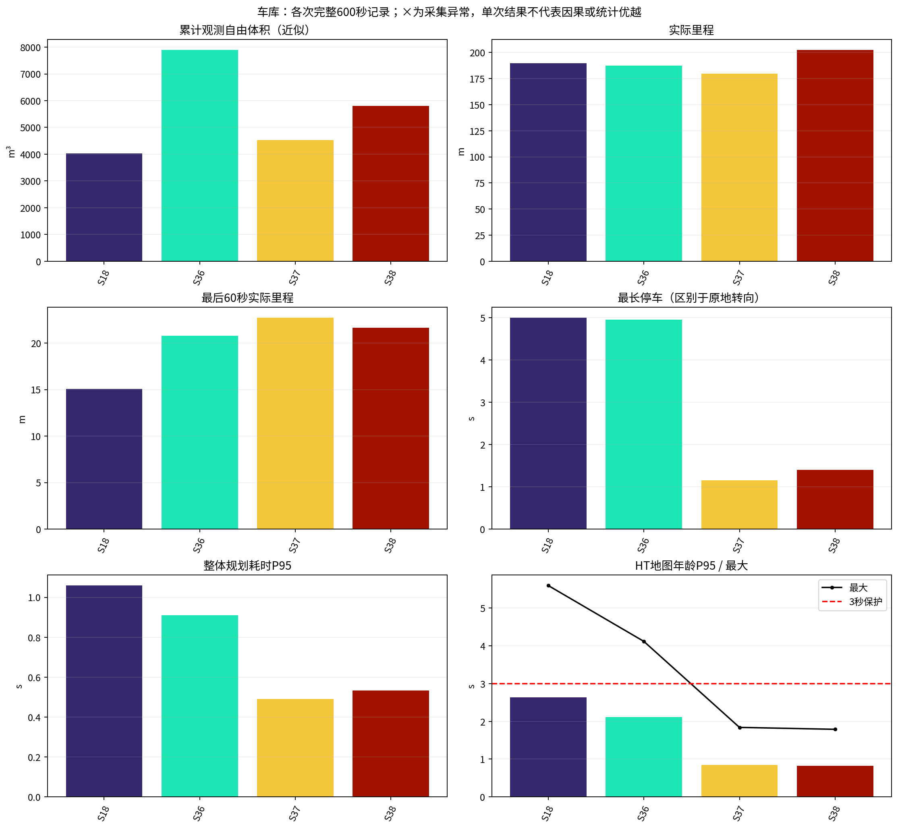
车库 · 累计体积与里程 PNG · PDF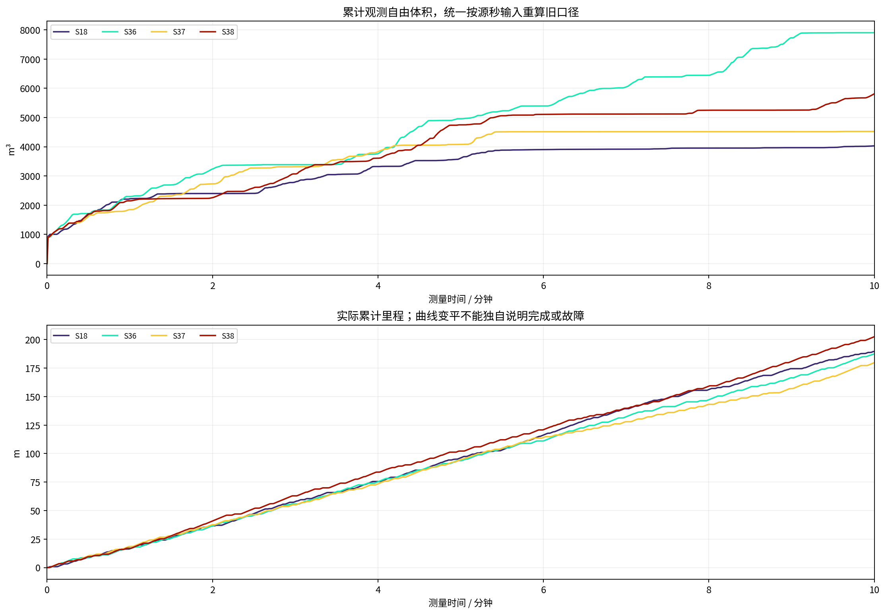
车库 · 每分钟新增观测 PNG · PDF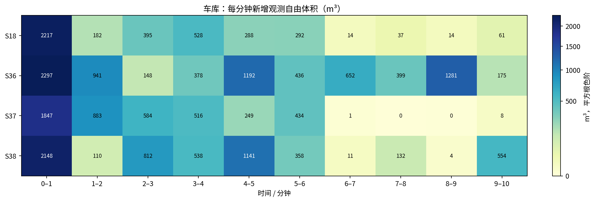
车库 · 停车、转向、倒车 PNG · PDF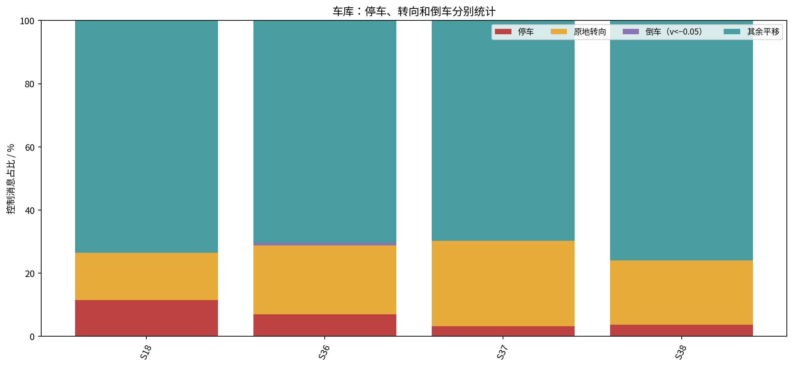
车库 · 规划与地图延迟分布 PNG · PDF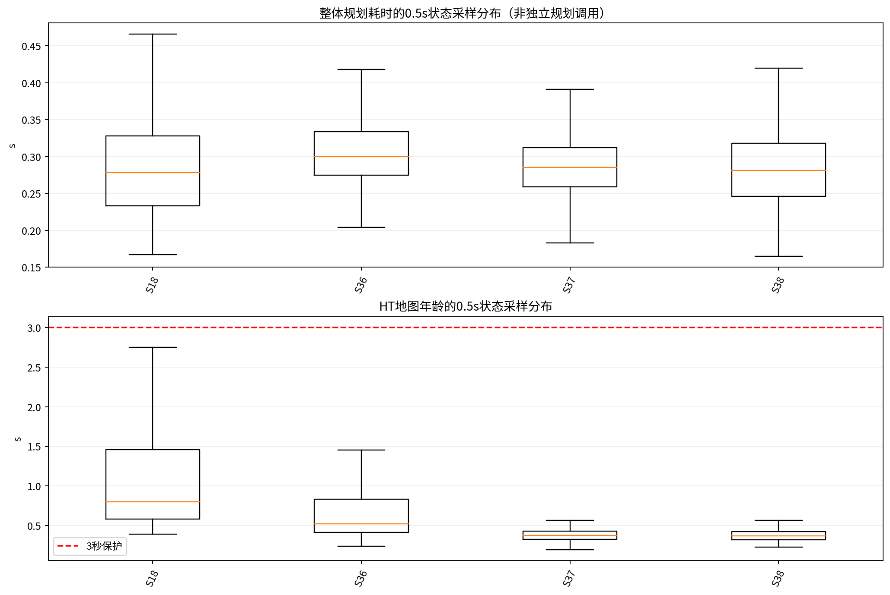
车库 · 同尺度实际轨迹 PNG · PDF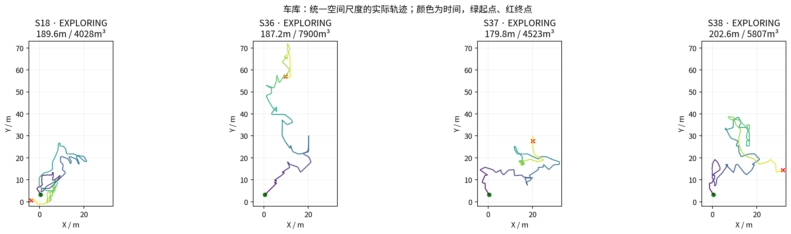
车库 · 探索、阻塞、返航、完成 PNG · PDF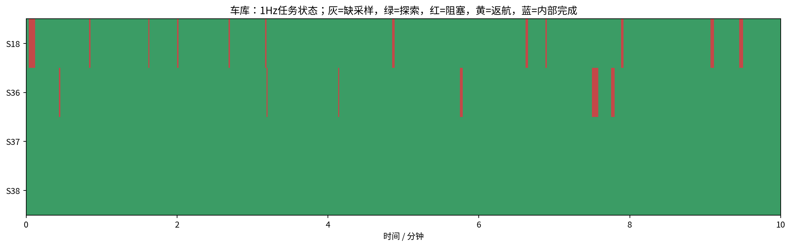
车库 · CPU与内存 PNG · PDF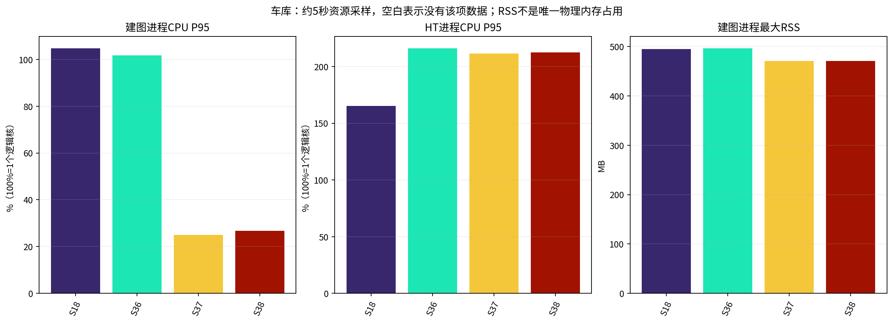
车库 · 有效增益与回访 PNG · PDF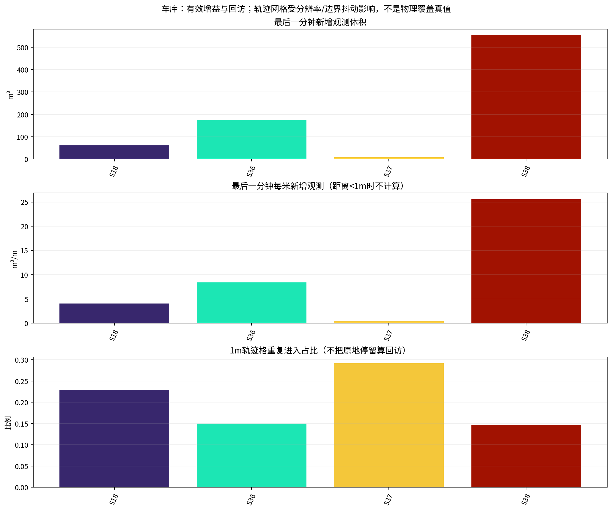
室内 · 多指标总览 PNG · PDF 室内 · 累计体积与里程 PNG · PDF
室内 · 累计体积与里程 PNG · PDF 室内 · 每分钟新增观测 PNG · PDF
室内 · 每分钟新增观测 PNG · PDF 室内 · 停车、转向、倒车 PNG · PDF
室内 · 停车、转向、倒车 PNG · PDF 室内 · 规划与地图延迟分布 PNG · PDF
室内 · 规划与地图延迟分布 PNG · PDF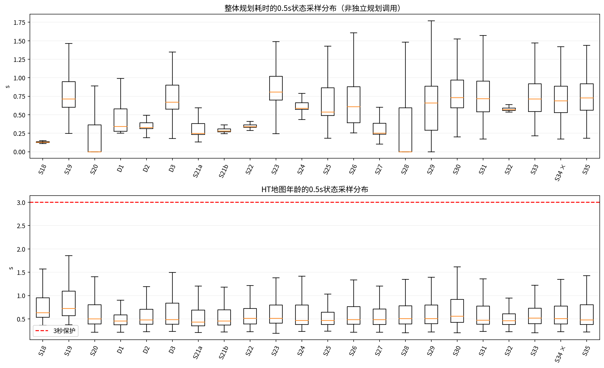
室内 · 同尺度实际轨迹 PNG · PDF 室内 · 探索、阻塞、返航、完成 PNG · PDF
室内 · 探索、阻塞、返航、完成 PNG · PDF 室内 · CPU与内存 PNG · PDF
室内 · CPU与内存 PNG · PDF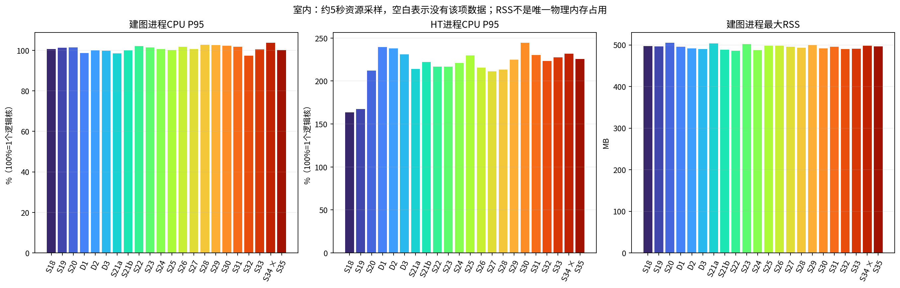
室内 · 有效增益与回访 PNG · PDF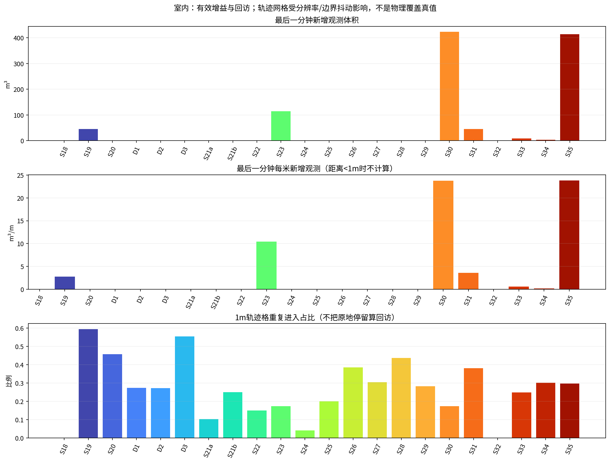
每版修改、验证和已知问题 PNG · PDF 每版修改、验证和已知问题 PNG · PDF
每版修改、验证和已知问题 PNG · PDF 每版修改、验证和已知问题 PNG · PDF
每版修改、验证和已知问题 PNG · PDF 每版修改、验证和已知问题 PNG · PDF
每版修改、验证和已知问题 PNG · PDF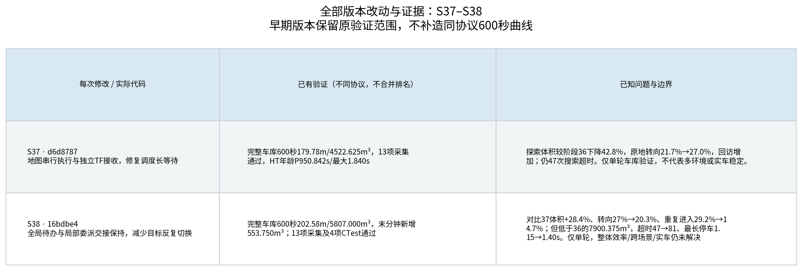